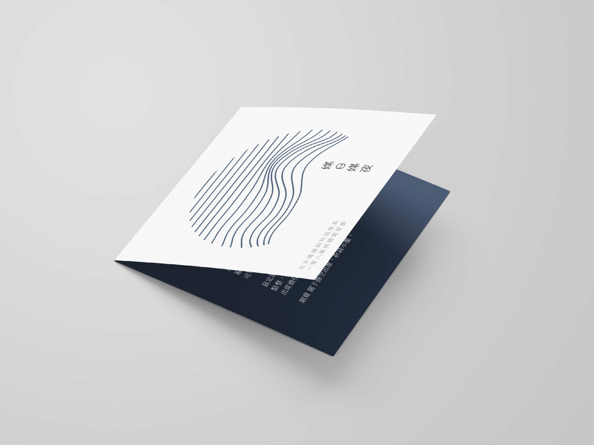

交大傳科系108級實習成果展
Graphic Design｜Jun - Oct 2018
擔任交大傳科系108級實習成果展的主視覺設計師，負責監督完成該展的所有設計品，包含：海報、展覽板、邀請卡、實習手冊、臉書粉絲專頁等。此展以「媒日媒夜」為題，勾勒出實習生活的白天與黑夜。不論是白天遇到的挑戰與磨練，或是夜裡忙碌充實自己、累積實力，皆使我們在一個又一個的實習考驗中不斷成長。
角色 主視覺設計師
能力 視覺設計、平面設計、專案協調與溝通、Illustrator

